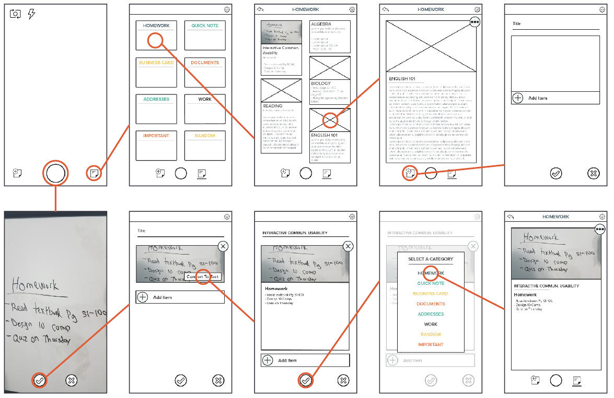

CASE STUDY
CONCEPT
The idea is to have an intelligent note taking app that does the writing, storing, and organizing all for you. The only thing that Saved require from you is to take a picture of the information you wish to save.
PROJECT TIME-LINE
FEATURES
CREATE NOTES
Users will have the ability to create quick notes with text, images, videos, audio, and files.
QUICK SNAP
Users will have the ability to take multiple quick pictures using their smartphones camera and have it saved locally on their device or over a cloud service to view on other synced devices.
PICTURE TO TEXT SCAN
User can scan a picture taken by Saved or an existing picture on their device and convert the detected text within the picture into rich text that can be edited, copied and pasted into other apps using the Saved intelligent AI system.
MATRIX BAR CODES DETECTION
With the intelligent AI system, Saved will automatically detect and read a matrix bar code such as a QR code, GTIN bar code, UPC, Aztec code and many others using a picture, it will present the information in a well organized and easy to read manner.
VIDEO AND AUDIO RECORDING
Along with pictures, users can also record videos and audio with the Saved app and have it stored locally on their device or over the cloud to view on other synced devices.
SPEECH TO TEXT
With the Saved intelligent AI system, the user will have the ability to convert recorded audio into rich text that can be edited, copied, and pasted into other apps.
ORGANIZATION TOOLS
Saved will have organization tools that will help the user organize their notes. Tools such as color coded notes, categorized folders, pinned important notes, tags for easy search and many more.
SEARCH
The user will have the ability to search through their library of notes based on tags and key-terms.
USER ACCOUNTS
The user will have the option to set up a cloud-based account with limited storage to store their notes for viewing and editing on other synced accounts.
FLOWCHART
LO-FI PROTOTYPE

USABILITY TESTING
STUDY GOALS
- User friendly testing
- Ensure that people understand the purpose of the app
- Mapping user paths
- Ensure users are familiar with the user interface of the app
TASK
Take a picture of the homework assignment, scan the image to text base note, and save the note after done.
STEPS
- Take a picture
- Confirm picture
- Add a title
- Scan the image
- save the note
- Select Homework category
Target completion time: Less than 25sec
Target error: Less than 1
Number of tests: 10
TEST RESULT
CHANGES
- Lots of user skipped the “add title” and “scan picture” steps
- Add a confirmation screen when tapping the “x” button
- Adjust text size
- Change some design elements
- Adjust navigation button size
- Change some languages for a clearer understanding of function
- Add small pop up reminder to add title
LOGO DRAFT
LOGO FINAL
To see the full case study, download the pdf file.
DOWNLOAD